Cada tarjeta muestra el número de devoluciones por hora del día.
Haz clic en cualquier gráfico para verlo en grande.
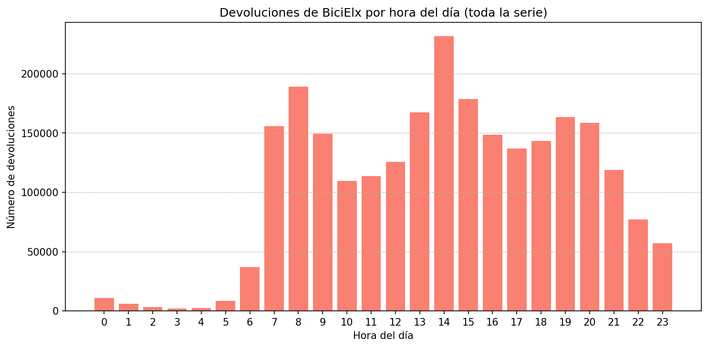
Devoluciones por hora del día (toda la serie)
Distribución horaria de todas las devoluciones registradas en BiciElx.
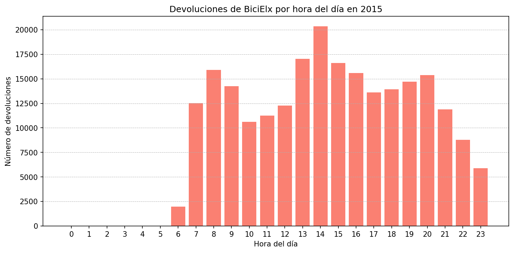
Devoluciones por hora del día en 2015
Distribución horaria de las devoluciones de BiciElx durante el año 2015.
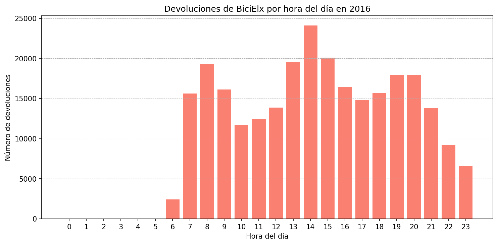
Devoluciones por hora del día en 2016
Distribución horaria de las devoluciones de BiciElx durante el año 2016.
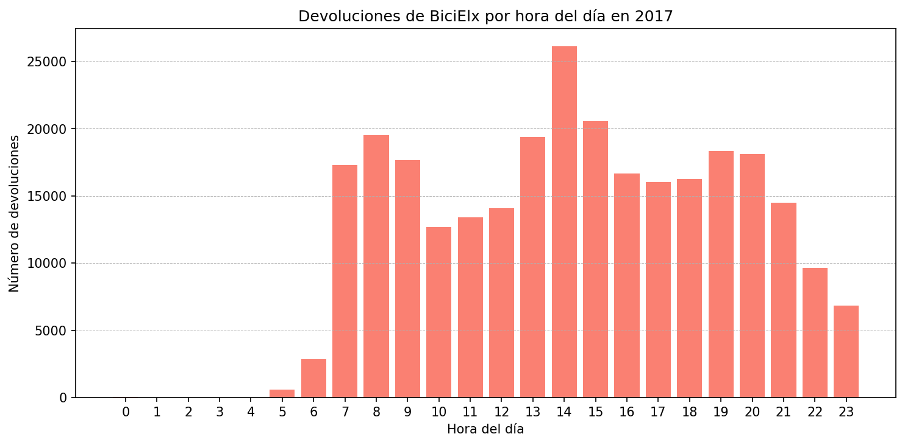
Devoluciones por hora del día en 2017
Distribución horaria de las devoluciones de BiciElx durante el año 2017.
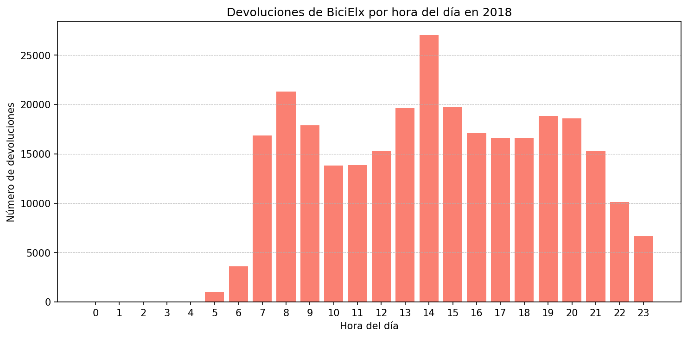
Devoluciones por hora del día en 2018
Distribución horaria de las devoluciones de BiciElx durante el año 2018.
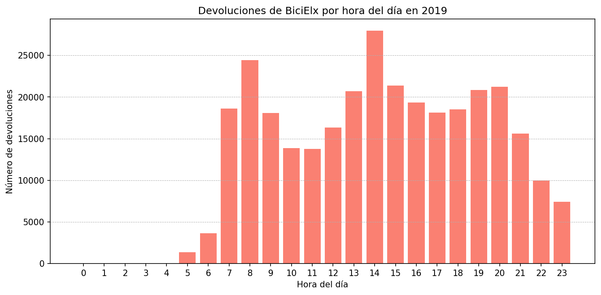
Devoluciones por hora del día en 2019
Distribución horaria de las devoluciones de BiciElx durante el año 2019.
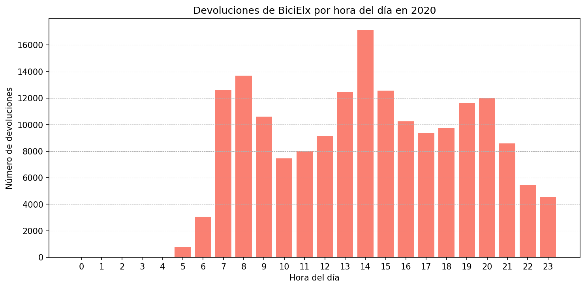
Devoluciones por hora del día en 2020
Distribución horaria de las devoluciones de BiciElx durante el año 2020.
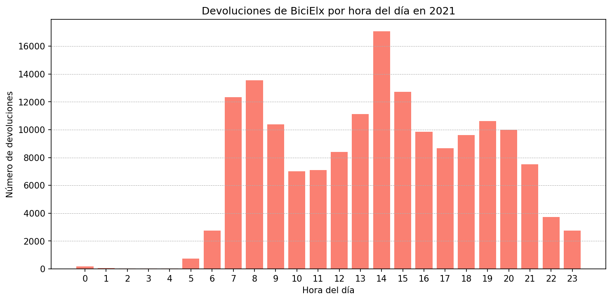
Devoluciones por hora del día en 2021
Distribución horaria de las devoluciones de BiciElx durante el año 2021.
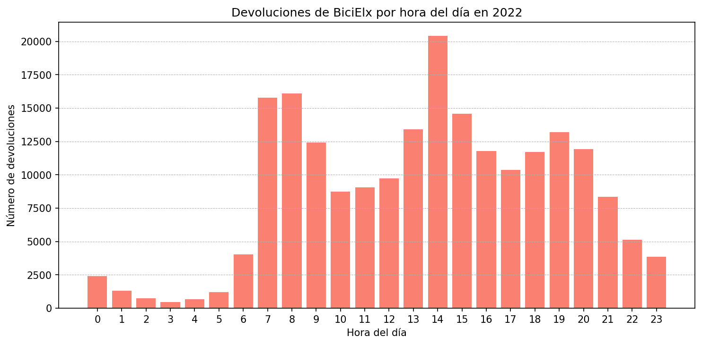
Devoluciones por hora del día en 2022
Distribución horaria de las devoluciones de BiciElx durante el año 2022.
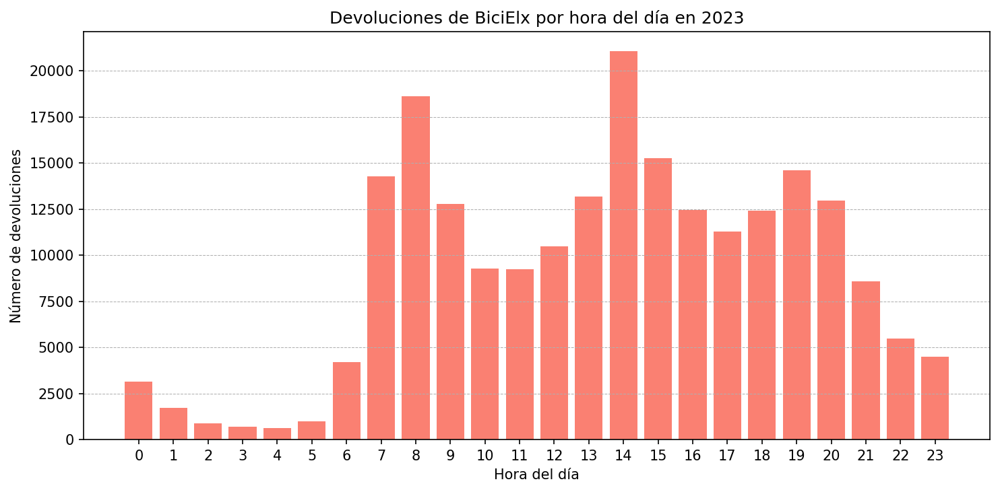
Devoluciones por hora del día en 2023
Distribución horaria de las devoluciones de BiciElx durante el año 2023.

Devoluciones por hora del día en 2024
Distribución horaria de las devoluciones de BiciElx durante el año 2024.
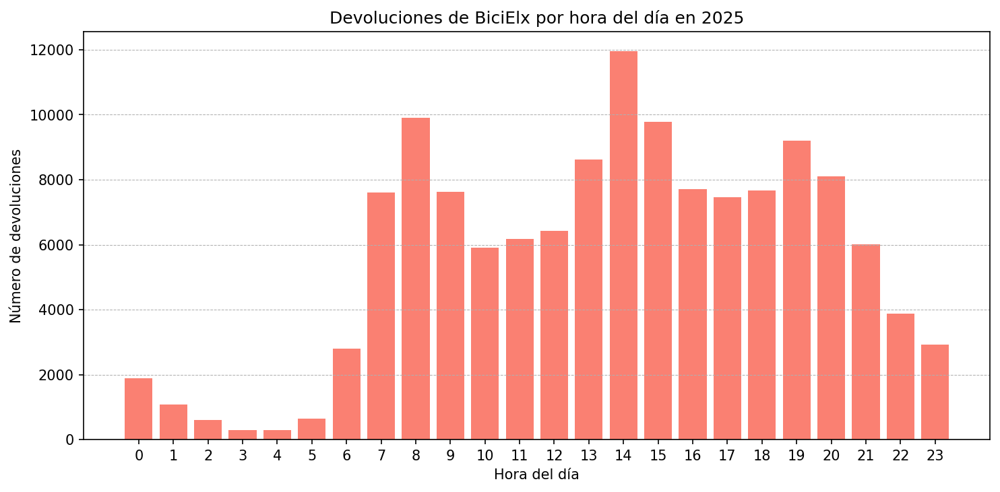
Devoluciones por hora del día en 2025
Distribución horaria de las devoluciones de BiciElx durante el año 2025.